Knots and Other Products
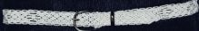
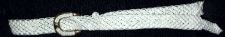

Most commonly square-knot work is used in belts and lanwayds.
The products can be incredibly fancy or plain depending on taste, but all made with care.
I make regular 12-line belts of cotton siene and nylon, 16-line belts and larger 20-line belts. For pricing and more sizing information please contact me here.
The belt buckles are silver or gold colored brass buckles, but custom buckles can be provided as well. These are working, durable belts which are handcrafted for daily use, to ensure you are ordering the correct belt size please refer to the sizing chart.
Feeling adventorous? Try making your own square knot here!
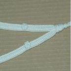
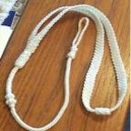
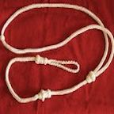
The Boatswain's lanyard has been around ever since the first Boatswain's call was used aboard ship. We offer three different types; formal wear lanyards, chief-jimmy lanyards, and plain lanyards.
These lanyards can be made as simple or elaborate, to know more about pricing and product information please contact me here.
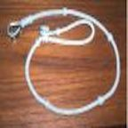
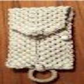
Keychains, Knife Lanyards, and Pouches are also available for purchase. Utilizing cotton laid line and polycover/nylon cover line products with superior strength are produced. Due to the color of the product use they can get dirty easily, but throwing the product in a sock in the washer and dryer will clean it right up!
The products can be costumized in length and decoration based on buyer preference, to discuss product pricing and specifics contact me here.
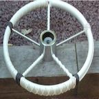
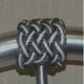
The tradition of coxcombing your helm is an old one, orginally developed to protect the wood from salt and sun on wooden wheels, it is continued on today. Not only does it help with slippery wheels, but can also serve as a decorative feature to enhance the appearance of the cockpit. The wheel size I typically use us 15" destroyer style wheel, but custom sizes can be recommended. I do not work with 32 or 40 inch wheels as they are too pricey!
I am available to travel to your location to meet you at your wheel. For product pricing and information please contact me here.
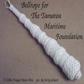
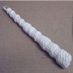
The bell rope is a necessary ancillary to the ship's bell, long considered the "heart of a ship". The bell rope is a symbol of pride in the ship taken by the crew. We offer 20" and 10" bell ropes created to be durable and functional.
For product pricing and information please contact me here.